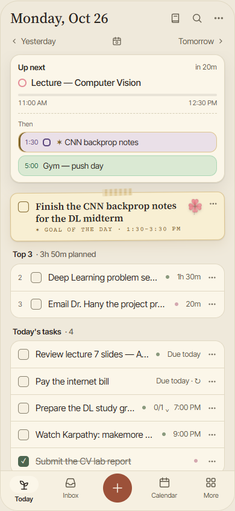
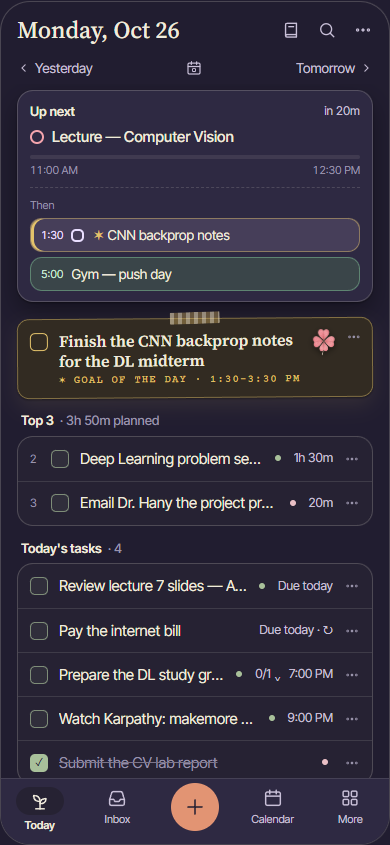
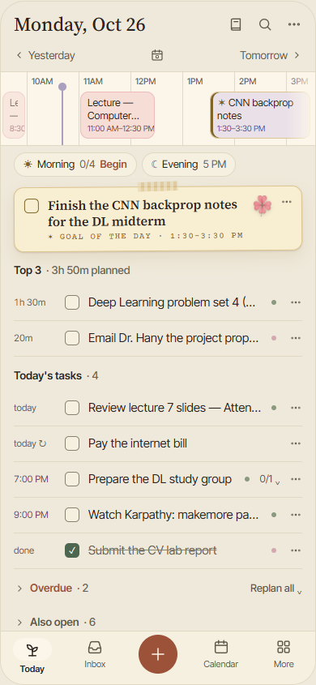
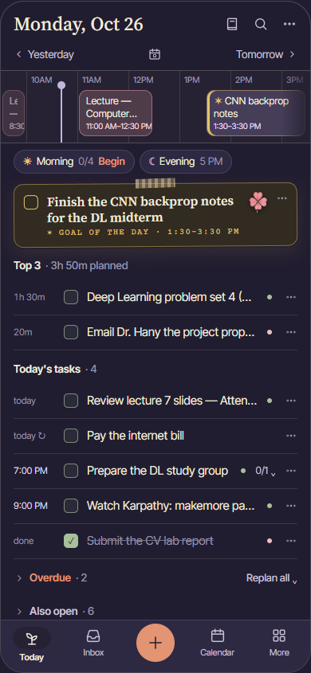

Kai's Flow · the phone Today, Day view · 26 Oct 2026
The Day view: four new ways to draw the day
The phone's Today gets two views: Now + next (B, picked, being built) and Day. The sideways day strip didn't work, so here are four different Days. None of them scrolls sideways. Each one keeps B's top bar, rounded panels, type and paper goal card, so switching views feels like turning a page in the same book. They all show the same Monday at 10:40 AM: 8 blocks (two pairs overlap), the morning ritual not started yet, the Top 3 with the goal, and 2 overdue tasks. Each is drawn at 360, 390 and 430 wide. Use Day / Night to switch themes, pick one, and press Copy my picks. Answer with a number, for example "Day view 3, widget 3".
Your picks: none yet
For reference: B, and the strip that was turned down
Left: B · Now + next, the view these four sit beside. Right: the old C · Day strip. The day ran sideways in 92 px, so blocks were cut to one or two words, and anything after 3 PM was off screen until you scrolled. Its list was a plain list with a time column, so the day and the tasks never met. Every direction below fixes both: the whole day fits without scrolling sideways, and the tasks sit on the day itself.


B · Now + next (picked)


Old C · Day strip (turned down)
What's the same in all four
B's frame: the date, the journal, search and ⋯ icons, Yesterday / Tomorrow, the tab bar with the + in the middle, Settings-style rounded panels, and the slim paper goal card with its tape, clover and gold ✶ Goal of the day stamp.
The Now · Day switch sits in the middle of the Yesterday / Tomorrow line, where the date icon was. Tapping the date opens the date picker instead. The app remembers which view you used last.
Blocks are drawn the way the calendar draws them: palette C (Rose for a lecture, Cornflower for office hours, Clay for coffee, Fern for the gym, Iris for a task), check B for a task block, the gold edge for the goal, and the lavender now line.
Rituals are on the day at their own time (Morning at 7:30 AM, Evening from 5:00 PM), with Begin right there.
Overdue shows its two tasks with Replan all, and Also open stays folded.
Spacing keeps to the 4 and 8 px steps. The type is the app's own (display serif, UI sans, mono for times). The workspace defaults of Inter and an indigo accent don't apply here, because the app's tokens win.
What the four borrow
Structured: one vertical line through the day, each item a rounded capsule as tall as it is long, free time shown as real gaps, and drag a capsule to move it.
Akiflow mobile: the calendar is the main view, with Agenda and 1-day modes, and you drag tasks from a list onto it.
Sunsama: a short "today" column of tasks beside the day, and timeboxing by dropping a task into a free slot.
Amie: tasks live next to events, and dragging a task onto the timeline turns it into a block.
Fantastical: the DayTicker, a short strip of coloured pills that shows roughly when each event is. You pull it down to get a bigger view.
Google Calendar's Schedule view: an agenda grouped by time, with full-width coloured event chips and empty stretches folded.
The iOS Clock bedtime dial and Apple Watch's calendar complications: a 24-hour ring with the day drawn as arcs.